Wolfgang Schmidt (1933- )
Schmidt's Theorem 1 (1967). Let
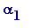
and
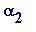
be real algebraic numbers such that
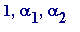
are linearly independent over the rational numbers, and let
 > 0. Then there are only a finite number of (simultaneous) rational approximations
> 0. Then there are only a finite number of (simultaneous) rational approximations
 and
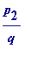
such that
and
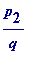
such that
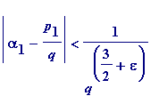 and 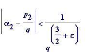
Schmidt's Theorem 2 (1970). Let
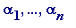
be real algebraic numbers such that
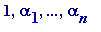
are linearly independent over the rational numbers Q, and let
 > 0. Then there are only a finite number of simultaneous rational approximations
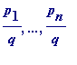
such that
> 0. Then there are only a finite number of simultaneous rational approximations
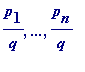
such that
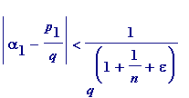 , ... ,
I regret I have omitted Mahler's famous A-, S-, T-, U- classification of real and complex numbers, which I briefly mentioned in the Mahler section earlier. Suffice it to remark that algebraic numbers are of type A, while transcendental numbers fall into the other three categories: roughly those that cannot be well-approximated by algebraic numbers (those are the S-numbers), those that can be well-approximated by algebraic numbers (those are the U-numbers, which in turn are further classified according to their integral degree , and here the Liouville numbers are an extreme example: those of degree 1), and finally those as it were in between (the T-numbers).
Mahler himself proved that almost all (in the exact sense of Lebesgue measure theory) real or complex numbers are of S-type. There was then a long-standing conjecture of Mahler's - dating from 1932 - that almost all real numbers are S-numbers of type 1, and almost all complex numbers are S-numbers of type 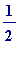 . That was settled in 1965 by Sprindzuk. In 1953 LeVeque proved the existence of U-numbers of each degree.
Schmidt's fundamental contribution, in this connection, was to prove the existence of T-numbers. I quote from the Introduction to Schmidt's 1970 paper T -NUMBERS DO EXIST (from a 1968 conference): K. Mahler in 1932 divided the real transcendental numbers into three classes, and called numbers in these classes S-numbers, T-numbers and U-numbers. But while the existence of S-numbers and of U-numbers is easy to see, the existence of T-numbers was left open. It is the purpose of the present paper to prove the following
Theorem 1. T-numbers do exist .
The proof will be via T*-numbers introduced by Koksma [1939]. We shall make essential use of a recent theorem of Wirsing about approximations to an algebraic number by algebraic numbers of a given degree.